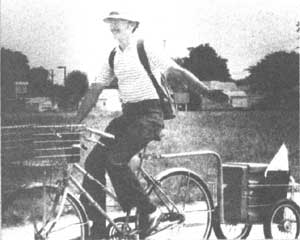
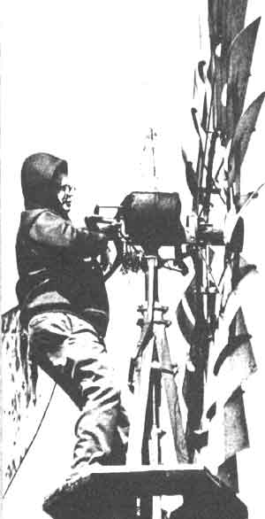

In celebration of folks involved in MOTHER-type doings around the world.
JENE BALDWIN: MEALS ON BICYCLE WHEELS
As a volunteer for Meals on Wheels, Jene Baldwin regularly delivers lunch to as many as 16 homes. But because he is concerned with energy conservation, Baldwin never considers using a gas-consuming vehicle to carry out his charitable work. Instead, the Joplin, Missouri resident puts his bicycle into action.
Jene created the Bike-A-Basket, a two-wheeled pivoting rear cart that he hopes to market, and uses it to transport a variety of items that many people would only think of hauling by car. Besides hot meals for homebound persons, the wire basket has carried Christmas poinsettias to senior citizens . . . loads of aluminum cans to the local recycling center . . . and even Jene's lawn mower. Baldwin pedals in all kinds of weather: He simply dons a poncho on rainy days or wears a ski mask if it's cold. And distance is not necessarily a deterrent: The benevolent bicycler once traveled 60 miles to provide popcorn for young patients at a state hospital.
Since as much as 30% of our gasoline consumption occurs during very short car trips, Jene would like to see folks walk or cycle whenever possible . . . and he hopes that his example will encourage others to get rolling! - Marti Attoun.
MONK WINGFIELD: WINDPLANT MAN
It was by accident that Monk Wingfield got out of the rat race and into his own business. Back in 1953, a farmer with a faulty windplant offered Monk $15 to climb the tower and remove the wheel. Wingfield accepted the offer and put the generator back into operation . . . and he's been working on windplants ever since.
Monk's decision to become self-employed was met with understandable concern on the part of his spouse, who worried that his earnings might be inadequate. "When my wife found out that I'd decided to quit my job to repair wind generators, she thought it was the craziest thing she'd ever heard," says Wingfield. Nevertheless, he followed his instinct, and the business has provided the family with a comfortable living.
The Hamilton, Illinois resident finds his work deeply satisfying, too, although he admits that it can be frightening on occasion.
"Once in a while an old platform will give way," Wingfield relates, "and I hang by my nylon safety rope. That's a thrill I never get used to." But Monk emphatically states that he has no retirement plans, and he becomes poetic when explaining why: "Sometimes on a frosty morning I climb a tower, and the sky is all streaked with red. Eagles wheel over the river . . . and I don't want to come down." - Louise Lum.
OSCAR JAITT: RBAN GARDENS
Oscar Jaitt lives in a two-bedroom bungalow that's surrounded by only 1,000 square feet of ground. Yet the San Diego, California resident has found room for a greenhouse, a vegetable garden, a compost area, and citrus and avocado trees . . . as well as six chickens and two ducks. Oscar believes that "this entire city could be growing its own food organically, planting fruit trees on the boulevards and vegetables and herbs on the lawns".
Jaitt wants to educate city people to the economic and culinary advantages of edible landscaping. And as the head of a firm called Urban Gardens, Oscar has been designing vegetable plots for city dwellers since 1980. Jaitt does whatever is necessary to insure that his clients will have organically grown plants that flourish. For a particular job, Oscar might double-dig raised beds . . . locate the supplier of a certain rare seed . . . provide plants from his own greenhouse .. . or identify an unusual garden pest and give advice on how to discourage the intruder without the use of chemicals.
Jaitt would like to see every megalopolis abounding with plots of edibles . . . and because of Urban Gardens, at least one large city is starting to bloom. - Stephanie Mood .
IN BRIEF . . .
In this age of "disposables", many people are inclined to throw furniture away instead of recovering it. Fortunately, the old art of' reupholstering got a boost last May when-largely through the efforts of RON SHAW - the National Guild of Master Upholsterers was born. The primary purpose of- the organization is "to establish paths of communication between the old-time upholsterers and the new apprentices". Shaw-who manages a shop, school, and apprenticeship program - notes that membership is open to anyone who supports the group's "commitment to quality". (For information on the registration fee and annual dues, write NGMU, Dept. TMEN, 7728 44th Avenue West, Mukilteo, Washington 98275.) Guild members receive a bimonthly newsletter, At the Bench, which offers how-to articles, tricks of the trade, and business guidelines for the furniture coverer.
One spring day in 1977, JACK BORDEN lay on his back in a Massachusetts field and gazed up at the sky. Overwhelmed by its beauty, he realized that he'd never before been truly aware of the magnificence above him. That was a turning point fir Borden, who was a television news reporter at the time. He began conducting interviews with people on the street, and the information he obtained confirmed his suspicions: Few folks really do look at the sky. (Other studies have shown this to be true, regardless of geographical location.) Jack went on to found For Spacious Skies, an organization devoted to promoting sky awareness. According to Borden, directing our eyes toward the heavens has many benefits: Sky-gazing is "peculiarly liberating", he says, and it gives us a new "sense of place", altering the way we relate to the world. Sky watchers tend to become not only more concerned about the environment but also more attuned to the spiritual realm. (For further details, write For Spacious Skies, Dept. TMEN, 3 Joy Street, Boston, Massachusetts 02108.)
Last Pearl Harbor Day, ESTHER "LITTLE DOVE" JOHN arrived by foot in New York City, thus ending a six-month, 3,000-mile walk for peace. The black musician/teacher says that she was able to complete her walk only by the grace of God and the goodwill of thousands of people, and that the generous support given her along the way stems from the spirit of love and compassion that can bring world peace. Now back in her Seattle home, John is studying several foreign languages in preparation for a possible walk to Moscow.
|
 PHOTO SUPPLIED BY THE AUTHOR |
 |
|